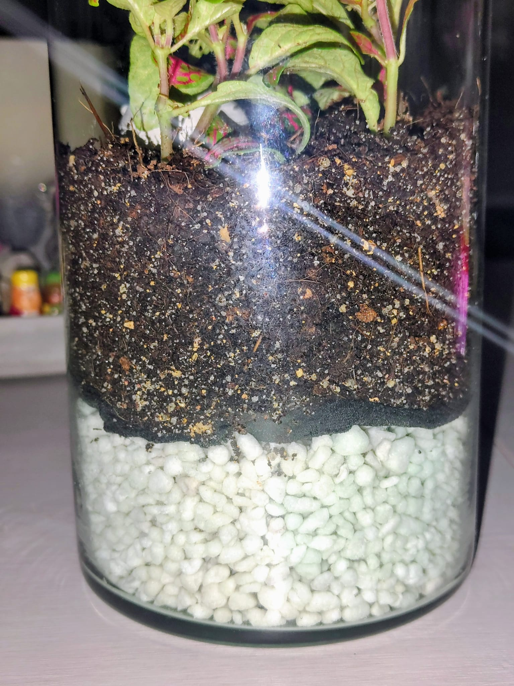

Los sustratos son probablemente la parte más importante de un terrario, ya que, al igual que en un bosque o en el campo, es lo que aporta todos los nutrientes a nuestras plantas para que puedan crecer y verse espectaculares, que al fin y al cabo es lo que buscamos con estos montajes.
El primer terrario que hagas probablemente acabe en fracaso tras unas semanas o meses. Aunque estés bien informado, si no tienes experiencia puedes cometer pequeños errores que acaben matando a tus plantas, cosa que me pasó a mí.
1. La textura idónea: mi receta 50-30-20
Desde mi primer tropiezo me di cuenta de que lo más importante es tener un sustrato que sea muy duradero. La mejor forma de conseguir esto es lograr una textura idónea para las raíces.
Si tomamos como ejemplo la Fittonia, que es la planta de terrarios simples por excelencia, necesitamos una tierra que no sea muy compacta y que esté bien aireada. Por eso, mi recomendación y la mezcla que siempre utilizo se compone de:
- 50% de sustrato universal: Aprovechando que es la base que contiene los nutrientes iniciales para nuestras plantas.
- 30% de fibra de coco humedecida: Le da una esponjosidad al sustrato buenísima y muy necesaria para que al mezclarlo pueda airearse correctamente.
- 20% de arena de río: Hace que la mezcla no sea un bloque sólido y le otorga una capacidad de drenaje muy beneficiosa. Así no almacena agua de más que pueda dar lugar a pudriciones.

El resultado final de la mezcla en el terrario. Fíjate en cómo no se ve compactada ni apelmazada.
2. La humedad y el "escuadrón de limpieza"
Es cierto que la mezcla durará más o menos dependiendo del tipo de ecosistema que tengamos. Por ejemplo, si tenemos un terrario muy húmedo, al final la tierra tendrá un grado de humedad elevado. Esto puede hacer que los desechos biológicos (como hojas caídas o raíces muertas) no se descompongan a tiempo y empiecen a pudrirse, llenando el sustrato de moho, hongos y mosca del sustrato que acabarían matando a las plantas.
Para evitar esto tenemos que asegurarnos de tener un "escuadrón de limpieza": unos pequeños animales llamados colémbolos. Ellos se encargan de comerse el moho y descomponer la materia muerta para devolverla a la tierra, asegurando así un ciclo de nutrientes infinito.
3. Adaptando la mezcla
Por otra parte, si en el futuro decides montar un terrario que recrea un desierto, su gran parte será solo arena, apenas tendrá humedad y la configuración durará muchísimo más tiempo intacta.
Como he dicho antes, todo depende del tipo de terrario y del cuidado y observación que le pongamos durante las primeras semanas. Pero si empiezas con una buena mezcla base, tendrás el 80% del trabajo hecho.